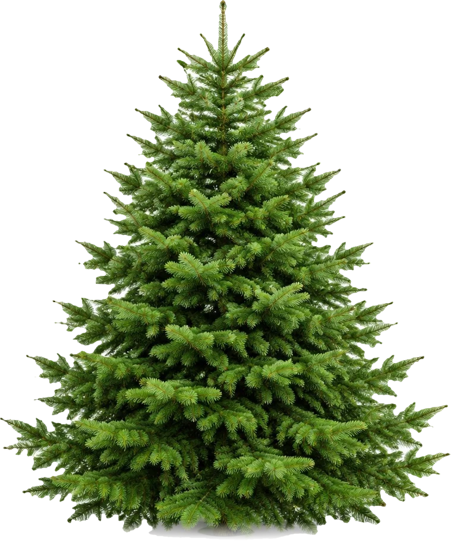

Музыка: выкл
Новогодний адвент-календарь
31 шар — 31 факт о Красном Кресте, мини-квиз и одно доброе дело
Открыто:
0
из 31 · Верных ответов:
0
· Добрых дел:
0

×
Доброе дело дня:
Сделано!
← Предыдущий
Следующий →